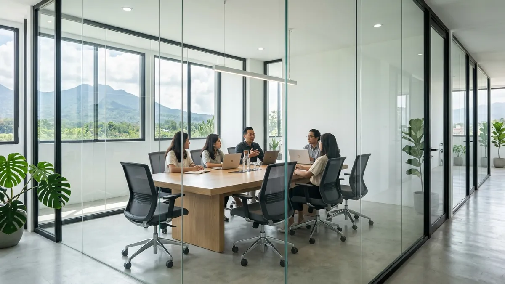
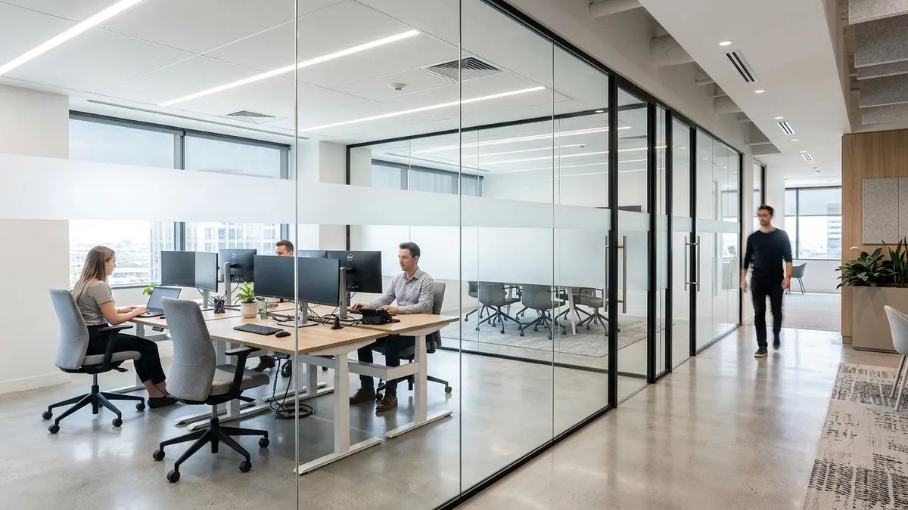

Studi Kasus: Pemasangan Partisi Kaca Tempered Kantor Minimalis Sejuk di Dau

📌 Ringkasan Inti
Partisi kaca tempered menjadi solusi umum untuk kantor minimalis di Dau karena memberi kesan terbuka namun tetap membatasi ruang secara fungsional. Studi kasus ini membahas proses pemasangan sekat kaca pada ruang meeting bergaya minimalis dengan detail spesifikasi teknis dan garansi sambungan sealant.
- Partisi kaca tempered umumnya menggunakan ketebalan sekitar 12mm untuk kebutuhan kantor modern.
- Bingkai profil aluminium berfungsi menopang kaca sekaligus menjaga tampilan interior tetap rapi dan kokoh.
- Sealant silikon netral pada sambungan berperan vital mencegah kebocoran udara AC maupun rembesan air kelembapan.
- Ruang meeting menjadi area prioritas sekat kaca guna menjaga privasi visual sekaligus estetika arsitektur terbuka.
- Dau sebagai kawasan berkembang di dekat kampus mendorong lonjakan kebutuhan kantor kecil bergaya arsitektur kontemporer.
- Apa Itu Partisi Kaca Tempered untuk Kantor
- Bagaimana Studi Kasus Pemasangan di Ruang Meeting Dau
- Apa Spesifikasi Umum Kaca dan Bingkai yang Digunakan
- Apakah Partisi Kaca Tempered Bergaransi Terhadap Kebocoran
- Apa Manfaat Partisi Kaca Tempered untuk Kantor Minimalis
- Kesalahan Umum Saat Memasang Partisi Kaca Kantor
- Kesimpulan Praktis
Partisi kaca tempered menjadi solusi umum untuk kantor minimalis di Dau karena memberi kesan terbuka namun tetap membatasi ruang secara fungsional. Studi kasus ini membahas proses pemasangan sekat kaca kantor dau pada ruang meeting bergaya minimalis yang mengutamakan pencahayaan alami dan ketahanan struktural.
Apa Itu Partisi Kaca Tempered Untuk Kantor
Partisi kaca tempered adalah sekat ruangan berbahan kaca yang telah melalui proses penguatan panas hingga temperatur lebih dari 600°C kemudian didinginkan mendadak secara merata, sehingga memiliki daya tahan benturan hingga 4 hingga 5 kali lebih tinggi dibanding kaca biasa. Partisi ini umum dipakai di lingkungan perkantoran modern untuk memisahkan ruang kerja tanpa menghalangi sirkulasi pencahayaan alami matahari.
Di kawasan Dau Kabupaten Malang yang terkenal dengan udara sejuk pegunungan dan panorama asri, partisi kaca tempered banyak dipilih untuk kantor bergaya minimalis karena memberi ilusi ruang yang luas dan lapang meski tapak bangunan terbagi menjadi beberapa bilik kerja. Bingkai aluminium dengan finishing anodized atau powder coating biasanya digunakan sebagai penopang dasar di lantai, dinding, dan plafon agar posisi lembaran kaca tetap kokoh, tegak lurus, dan stabil.

Bagaimana Studi Kasus Pemasangan Di Ruang Meeting Dau
Studi kasus ini membahas pengerjaan sekat kaca kantor dau pada ruang meeting kantor berkonsep ruko minimalis di kawasan sekitar Jalan Raya Sengkaling, Dau. Ruang meeting tersebut dipilih karena pemilik perusahaan membutuhkan privasi audio-visual saat berdiskusi dengan klien, namun tidak ingin ruangan terasa sempit atau terisolasi seperti halnya sekat partisi gipsum konvensional.
Proses pemasangan diawali dari tahap survei laser leveling untuk mengukur kerataan lantai dan dinding plesteran. Selanjutnya, teknisi memasang u-channel bingkai aluminium tebal 1.35 mm pada perimeter bukaan sebagai rel dudukan kaca tempered. Kaca tempered berketebalan 12mm dipesan dengan toleransi ukuran presisi tinggi, kemudian diangkat menggunakan suction cup vakum profesional dan dimasukkan ke dalam rangka aluminium.
Setelah seluruh panel kaca terpasang pada dudukannya, celah nat antarkaca dan sambungan antara kaca dengan kusen aluminium ditutup rapat menggunakan sealant silikon netral grade struktural. Tahap akhir pengerjaan melibatkan pembersihan residu masking tape dan pengujian kekedapan partisi terhadap kebocoran udara hembusan pendingin ruangan (AC).
Paket Partisi Kaca Tempered Kantor Dau & Malang Presisi
Layanan fabrikasi dan instalasi sekat kaca ruang meeting kantor, pintu patch fitting, rel geser kaca, dan profil aluminium berkualitas prima bergaransi resmi.
Apa Spesifikasi Umum Kaca Dan Bingkai Yang Digunakan
Spesifikasi teknis yang digunakan pada proyek sekat kantor di Dau ini mencakup kaca tempered setebal 12mm dengan tepian gosok mesin (flat polished edge). Kaca 12mm dipilih karena memiliki momen inersia yang sangat stabil terhadap getaran pintu, sehingga tidak melengkung meski bentangan partisi mencapai ketinggian lebih dari 2.7 meter.
| Komponen | Spesifikasi Rekomendasi | Fungsi Utama |
|---|---|---|
| Kaca Partisi | Kaca Tempered 10mm – 12mm Clear / Frosted Acid | Kekuatan benturan tinggi, redam bising > 32 dB. |
| Bingkai / U-Channel | Aluminium U-Channel 1.35 mm Black Powder Coating | Dudukan struktural kaca tanpa karat di cuaca sejuk. |
| Bahan Perekat | Sealant Silikon Netral (Neutral Cure Non-Acidic) | Elastisitas sambungan tanpa korosi pada aluminium. |
| Aksesori Pintu | Floor Hinge Heavy Duty + Top Pivot & Lock Patch | Mekanisme buka-tutup halus dan penahan dorongan angin. |
Selain ketebalan kaca, jenis sealant memegang peranan krusial dalam spesifikasi. Sealant silikon netral dipilih karena memiliki modulus elastisitas tinggi dan mampu mengakomodasi ekspansi termal mikro pada bingkai aluminium akibat perubahan suhu harian yang mencolok di kawasan Dau.
Apakah Partisi Kaca Tempered Bergaransi Terhadap Kebocoran
Jaminan garansi terhadap kebocoran udara maupun rembesan air pada sambungan sealant silikon wajib diberikan oleh aplikator resmi terpercaya. Pada proyek kantor di Dau, garansi pengerjaan mencakup perbaikan dan penambalan ulang sealant silikon apabila terjadi penyusutan celah atau keretakan lem dalam periode masa pemeliharaan setelah serah terima pekerjaan.
Bagi para pemilik usaha maupun pengelola perkantoran di Dau, sangat disarankan untuk memastikan klausul garansi tertulis tercantum dalam surat penawaran atau kontrak kerja. Hal ini mencakup jaminan stabilitas profil dudukan aluminium dan komitmen kunjungan servis teknisi jika terjadi deformasi posisi kaca akibat pergerakan struktur gedung.
"Dalam instalasi partisi kaca tempered kantor di kawasan Dau yang bersuhu sejuk dan berkelembapan tinggi, kerapatan sealant silikon netral merupakan faktor kunci. Kami selalu memastikan celah ekspansi terisi padat tanpa rongga mikro, sehingga redam suara ruang meeting optimal dan sambungan kaca bebas getaran jangka panjang."
Apa Manfaat Partisi Kaca Tempered Untuk Kantor Minimalis
Manfaat primer dari instalasi sekat kaca tempered adalah kemampuan menyalurkan pencahayaan alami secara merata ke seluruh lorong dan sudut ruangan. Hal ini tidak hanya memangkas konsumsi daya listrik lampu di siang hari, namun juga secara psikologis meningkatkan fokus dan produktivitas karyawan kantor.
Di samping faktor efisiensi energi, partisi kaca tempered jauh lebih mudah dirawat dan dibersihkan dibanding partisi dinding gypsum yang rentan lembap atau sekat kayu yang berisiko diserang rayap. Tampilan kaca bening yang dipadukan dengan aksen garis stiker sandblast (kaca buram) memberikan sentuhan korporat modern yang sangat prestisius bagi kantor di kawasan Dau.
Kesalahan Umum Saat Memasang Partisi Kaca Kantor
Kekeliruan paling fatal yang sering dijumpai adalah pengukuran bukaan yang kurang presisi tanpa memperhatikan ketidakrataan elevasi lantai beton. Mengingat kaca tempered tidak dapat dipotong atau digerinda ulang setelah keluar dari pabrik penguatan termal, kesalahan ukuran beberapa milimeter saja akan membuat panel kaca gagal masuk ke bingkai.
Kesalahan lain yang kerap terjadi adalah penggunaan sealant asam berharga murah yang cepat getas dan berbau menyengat, serta pengabaian celah ekspansi termal pada bingkai aluminium. Tanpa celah ekspansi yang tepat, pemuaian bingkai akibat kenaikan suhu siang hari dapat memberi tekanan berlebih pada tepi kaca tempered dan memicu risiko pecah spontan (spontaneous breakage).
Kesimpulan Praktis
Partisi kaca tempered menjadi pilihan paling tepat untuk menata kantor minimalis modern di Dau, menghadirkan keseimbangan antara transparansi ruang, privasi meeting, dan efisiensi pencahayaan alami. Pastikan Anda mempercayakan pekerjaan pada aplikator spesialis yang menyediakan kaca bersertifikat SNI, profil aluminium presisi, serta garansi sambungan sealant silikon tertulis demi keamanan dan keawetan ruang kerja Anda.
Pertanyaan Seputar Sekat Kaca Kantor Dau
Ketebalan sekitar 12mm umum digunakan untuk partisi kantor karena cukup kuat, rigid, serta tetap proporsional dipasang pada bingkai profil aluminium standar.
Secara umum sangat aman karena kaca tempered dirancang lebih tahan benturan dibanding kaca biasa, dan jika pecah akan menjadi pecahan kristal tumpul kecil yang tidak tajam.
Penyedia jasa aplikator resmi memberikan garansi tertulis untuk perbaikan sambungan sealant silikon dan penyesuaian dudukan rangka aluminium jika timbul celah dalam masa garansi.